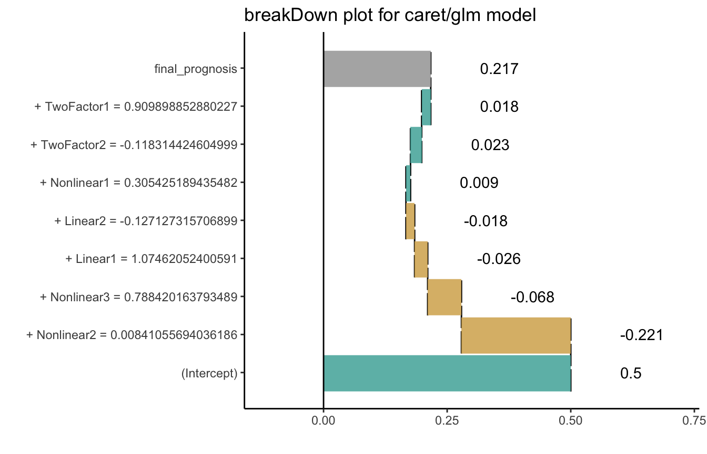

How to use breakDown package for models created with caret
Przemyslaw Biecek
2018-05-17
This example demonstrates how to use the breakDown package for models created with the caret package.
First we will generate some data.
library(caret)
set.seed(2)
training <- twoClassSim(50, linearVars = 2)
trainX <- training[, -ncol(training)]
trainY <- training$Class
head(training)
#> TwoFactor1 TwoFactor2 Linear1 Linear2 Nonlinear1 Nonlinear2
#> 1 -0.6561702 -1.6480450 1.0744594 0.9758906 0.2342843 0.6805653
#> 2 -0.9849973 1.4598834 0.2605978 -0.1694232 0.1381283 0.7460168
#> 3 2.3722541 1.7069944 -0.3142720 0.7221918 -0.6920591 0.4642024
#> 4 -2.2067173 -0.6972704 -0.7496301 -0.8444186 -0.9303336 0.1374181
#> 5 0.5166671 -0.7228376 -0.8621983 1.2772937 0.9959069 0.8143796
#> 6 1.3331262 -0.9929323 2.0480403 -1.3431105 0.6711474 0.8321613
#> Nonlinear3 Class
#> 1 0.6920055 Class1
#> 2 0.5599569 Class2
#> 3 0.3426912 Class1
#> 4 0.2344975 Class2
#> 5 0.4296028 Class1
#> 6 0.7367007 Class1Now we are ready to train a model. Let’s train a glm model with caret.
cctrl1 <- trainControl(method = "cv", number = 3, returnResamp = "all",
classProbs = TRUE,
summaryFunction = twoClassSummary)
test_class_cv_model <- train(trainX, trainY,
method = "glm",
trControl = cctrl1,
metric = "ROC",
preProc = c("center", "scale"))
test_class_cv_model
#> Generalized Linear Model
#>
#> 50 samples
#> 7 predictor
#> 2 classes: 'Class1', 'Class2'
#>
#> Pre-processing: centered (7), scaled (7)
#> Resampling: Cross-Validated (3 fold)
#> Summary of sample sizes: 34, 32, 34
#> Resampling results:
#>
#> ROC Sens Spec
#> 0.7420267 0.7962963 0.712963To use breakDown we need a function that will calculate scores/predictions for a single observation. By default the predict() function returns predicted class.
So we are adding type = "prob" argument to get scores. And since there will be two scores for each observarion we need to extract one of them.
predict.fun <- function(model, x) predict(model, x, type = "prob")[,1]
testing <- twoClassSim(10, linearVars = 2)
predict.fun(test_class_cv_model, testing[1,])
#> [1] 0.2167808Now we are ready to call the broken() function.
library("breakDown")
explain_2 <- broken(test_class_cv_model, testing[1,], data = trainX, predict.function = predict.fun)
explain_2
#> contribution
#> (Intercept) 0.500
#> + Nonlinear2 = 0.00841055694036186 -0.221
#> + Nonlinear3 = 0.788420163793489 -0.068
#> + Linear1 = 1.07462052400591 -0.026
#> + Linear2 = -0.127127315706899 -0.018
#> + Nonlinear1 = 0.305425189435482 0.009
#> + TwoFactor2 = -0.118314424604999 0.023
#> + TwoFactor1 = 0.909898852880227 0.018
#> final_prognosis 0.217
#> baseline: 0And plot it.
